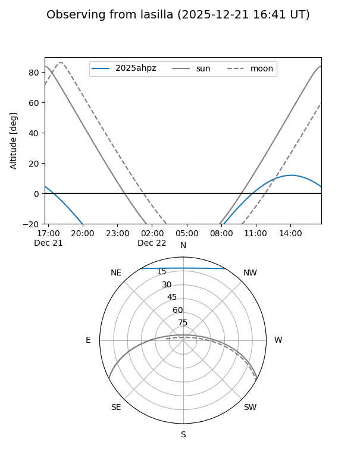
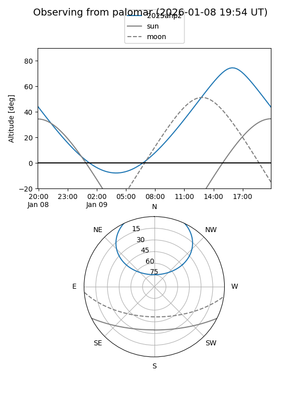

2025ahpz
Target 2025ahpz at 2025-12-20 00:02
Aliases and brokers:
FINK: fink-portal.org/ZTF25acjdecx
Lasair: lasair-ztf.lsst.ac.uk/objects/ZTF25acjdecx
ALeRCE: alerce.online/object/ZTF25acjdecx
TNS: wis-tns.org/object/2025ahpz
YSE: ziggy.ucolick.org/yse/transient_detail/2025ahpz
alt names
ZTF25acjdecx (ztf,fink_ztf)
2025ahpz (tns,yse)
Coordinates:
equatorial (ra, dec) = 231.3971,+48.87373
equatorial (HMS+DMS) = 15:25:35.31,+48:52:25.44
galactic (l, b) = (79.6949,+53.25883)
Flags:
Photometry:
last ztfg=20.14, ztfr=19.93
1 ztfg, 1 ztfr detections
Lightcurve

Visibility


Additional plots